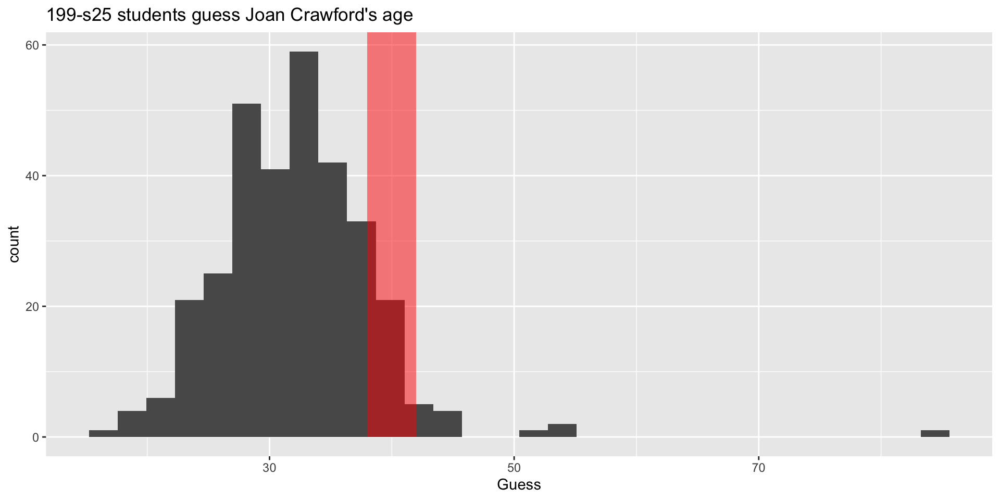
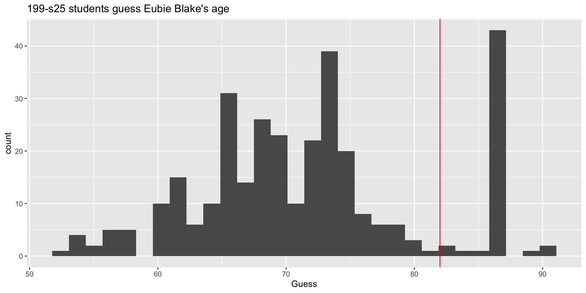
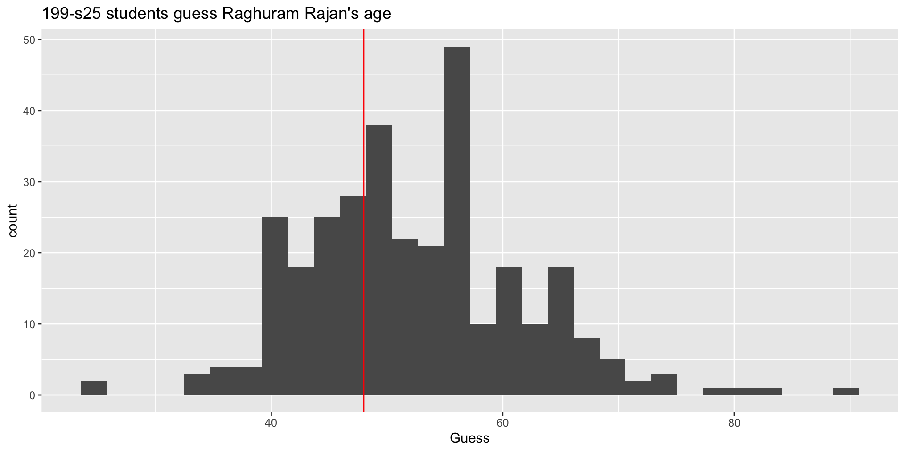
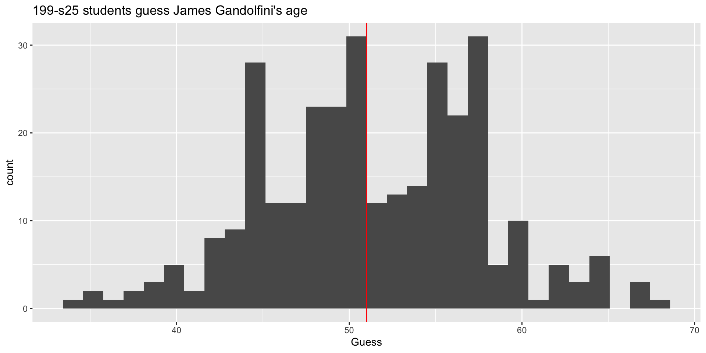
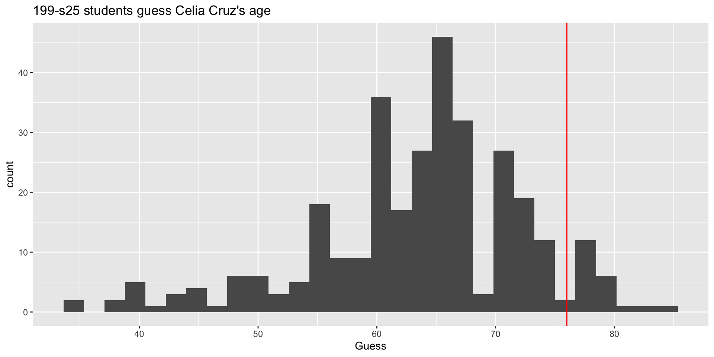

Welcome to STA 199!
John Zito
Duke University
STA 199 Spring 2025
Teaching team: a glamorous assemblage
Caitrin Murphy
Han Chen
Katie Solarz
Hyunjin Lee
Jasmine Wang
Liane Ma
Avery Hodges
Alexa Fahrer
Domenic Fenoglio
Julia Healey-Parera
David King
Lisa Zhang
Eduardo Vasquez
Arijit Dey
Federico Arboleda
Sarah Wu
Li Fan
Devarpita Bag
Netra Mittal
Natasha Harris
Sonya Eason
Noah Obuya
Mary Knox
John Zito
What are we studying?
Data science
Transforming messy, incomplete, imperfect data into knowledge.
Statistical thinking
Quantifying our uncertainty about that knowledge.
The data science life cycle

Syllabus highlights
Homepage
- All course materials
- Links to Canvas, GitHub, RStudio containers, etc.
Course toolkit
All linked from the course website:
- GitHub organization: github.com/sta199-s25
- RStudio containers: cmgr.oit.duke.edu/containers
- Communication: Ed Discussion
- Assignment submission and feedback: Gradescope
Activities
- Introduce new content and prepare for lectures by watching the videos and completing the readings
- Attend and actively participate in lectures and labs, office hours, team meetings
- Practice applying statistical concepts and computing with application exercises during lecture, graded for attempting
- Put together what you’ve learned to analyze real-world data
- Lab assignments (7 or 8 throughout semester)
- Exams (midterm x 2 + final)
- Term project completed in teams
Application exercises
Daily-ish in lecture
“Graded” for attempt, not accuracy
Practice Weeks 1 + 2, graded thereafter
At least one commit by 2 pm of the day of lecture
Turn in at least 70% for full credit
Labs
Start in lab session
Complete at home
Due within a week
Discussion with classmates ok, copying not ok!
Lowest score dropped
Exams
Three exams, each 20%
-
Midterm comprised of two parts:
In-class: 75 minute in-class exam. Closed book, one sheet of notes (“cheat sheet”) – 70% of the grade.
Take-home: Follow from the in class exam and focus on the analysis of a dataset introduced in the take home exam – 30% of the grade.
Final in-class only (Apr 29, 9am - 12pm): Closed book, one sheet of notes (“cheat sheet”).
“Cheat sheet”: No larger than 8.5” x 11”, both sides, must be prepared by you.
Caution
Exam dates cannot be changed and no make-up exams will be given. If you can’t take the exams on these dates, you should drop this class.
Project
Dataset of your choice, method of your choice
Teamwork
Five milestones, interim deadline throughout semester
Final milestone: Presentation (video) and write-up
Presentations submitted as videos
Peer review between teams for content, peer evaluation within teams for contribution
Some lab sessions allocated to project progress
Caution
Project due date cannot be changed. You must complete the project to pass this class.
Teams of 4 - 5
- Assigned by us within your lab section
- Project
- Peer evaluation during teamwork and after completion
- Expectations and roles
- Everyone is expected to contribute equal effort
- Everyone is expected to understand all code turned in
- Individual contribution evaluated by peer evaluation, commits, etc.
Grading
| Category | Percentage |
|---|---|
| Application Exercises | 5% |
| Labs | 15% |
| Midterm 1 | 20% |
| Midterm 2 | 20% |
| Final | 20% |
| Project | 20% |
No specific points allocated to attendance, but the application exercise score is implicitly tied to attendance.
See course syllabus for how the final letter grade will be determined.
Wiggle room
- You only have to complete 70% of the AEs to receive full credit;
- We drop the lowest lab score;
- We replace the lowest in-class midterm score with your final exam score (if it’s better).
Support
- Help from humans:
- Attend office hours
- Ask and answer questions on the discussion forum
- Reserve email for questions on personal matters and/or grades
- Read the course support page
Announcements
- Posted on Canvas (Announcements tool) and sent via email, be sure to check both regularly
- I’ll assume that you’ve read an announcement by the next “business” day
- I’ll (try my best to) send a weekly update announcement each Friday, outlining the plan for the following week and reminding you what you need to do to prepare, practice, and perform
Accessibility
The Student Disability Access Office (SDAO) is available to ensure that students are able to engage with their courses and related assignments.
I am committed to making all course materials accessible and I’m always learning how to do this better. If any course component is not accessible to you in any way, please don’t hesitate to let me know.
If you need testing accommodations
Make sure I get a letter, and make your appointments in the Testing Center now.
Late work, waivers, lecture recordings, regrades…
- We have policies!
- Read about them on the course syllabus and refer back to them when you need it
Collaboration
Labs: discussing and helping is fine. Sharing your solutions and copying others is not;
Exams: collaboration of any kind is completely forbidden on any part of any exam;
Projects: collaboration of any kind is enthusiastically encouraged within your team. Between teams, it’s the same as labs; do not directly share your stuff or copy off of others.
Use of AI tools
-
AI tools for code:
- Sure, but be careful/critical! Working code
!=correct/good code. - Must explicitly cite with a direct url linking to the conversation you had.
- Sure, but be careful/critical! Working code
AI tools for narrative: Absolutely not!
AI tools for learning: Sure, but be careful/critical!
Academic integrity
To uphold the Duke Community Standard:
I will not lie, cheat, or steal in my academic endeavors;
I will conduct myself honorably in all my endeavors; and
I will act if the Standard is compromised.
Zeros from conduct violations will not be dropped or replaced;
If people are copying, sharer and recipients penalized equally. It does not matter how well-intentioned everyone was;
If we discover violations, they go straight to the conduct office.
A game
How old is this person?
Ethel Merman
Ethel Merman

| Born | January 16, 1908 |
| Died | February 15, 1984 |
| Age | 76 |
| Claim to fame | JZ’s favorite singer |
How old is this person?
Megan Pete
Megan Thee Stallion

| Born | February 15, 1995 |
| Age | 29 |
| Claim to fame | Rapper |
How old is this person?
봉준호
Bong Joon-ho

| Born | September 14, 1969 |
| Age | 55 |
| Claim to fame | Directed Parasite, Snowpiercer, etc |
Now do it with pictures…
When the picture was taken, how old was the person?

Managing expectations
The stakes are low today. We’re just getting our feet wet and working out the kinks:
It’s the first time all 300+ of us are attempting to access our containers simultaneously. It may choke;
If you get stuck on a loading screen of some kind, be patient and let it do its thing. Refreshing, reloading, etc will just amplify our collective problem;
If yours never loads, no big deal. Just sit back and watch me, or follow along on a neighbor’s screen;
Even if yours does load, you’re welcome to just watch.
Yuja Wang

| Born | 2/10/1987 |
| Age in pic | 36 |
| Claim to fame | Classical pianist |
I’m sure she’d be pleased
Joan Crawford
A secret she took to her grave:

| Born | 3/23/(1904 - 1908) |
| Died | 5/10/1977 |
| Age in pic | 38 - 42 |
| Claim to fame | Oscar-winning actor |
We’ll never know…

Eubie Blake
His actual birthday was not known at the time:

| Born | 2/7/1887 |
| Died | 2/12/1983 |
| Age in pic | 82 |
| Claim to fame | Composer |
lol that bar at 86

Watch out for data quality!


Raghuram Rajan
| Born | 2/3/1963 |
| Age in pic | 48 |
| Claim to fame | UChicago economist |
| RBI governor |
You’re natural denoisers!

James Gandolfini

| Born | 9/18/1961 |
| Died | 6/19/2013 |
| Age in pic | 51 |
| Claim to fame | played Tony Soprano |
The wisdom of crowds

Celia Cruz

| Born | 10/21/1925 |
| Died | 7/16/2003 |
| Age in pic | 76 |
| Claim to fame | Queen of Salsa |
¡Azúcar!

Our best guessers
| Truth | No. 1 | No. 2 | No. 4 | No. 4 | |
|---|---|---|---|---|---|
| Wang | 36 | 34 | 36 | 27 | 34 |
| Crawford | 40? | 38 | 42 | 33 | 40 |
| Blake | 82 | 77 | 74 | 80 | 72 |
| Rajan | 48 | 50 | 50 | 45 | 53 |
| Gandolfini | 51 | 58 | 48 | 50 | 46 |
| Cruz | 76 | 72 | 68 | 73 | 73 |
| 3.66 | 3.83 | 4.16 | 4.16 |
Whence ggplot?


Silly exercise, serious themes
Statistical lessons
- Domain knowledge and modeling assumptions: data do not speak for themselves. You need some subject-matter expertise about what you’re studying, as well as an interpretive lens;
- Are you asking questions the data can actually answer?
- Uncertainty has many sources, and in some cases, it may be simply irreducible, no matter how hard you try;
- Data quality and data cleaning: Data are not gospel. There could be noise and mistakes. Then what?
- Wisdom of crowds: aggregating many imperfect guesses can do better than any one individual guess.
Hard skills
- GitHub repositories: cloning and pulling;
- Working with data in CSV format;
- Rendering a Quarto document to get PDFs that seamlessly integrate written text, code, and output;
- Using
ggplotto build up visualizations in layers, like a cake.
Get ready
You will do all of these things on a weekly basis in this course.
Wrap up
This week’s tasks
- Complete Lab 0
- Computational setup
- Getting to know you survey
- Read the syllabus and ask questions on Ed
- Complete readings and videos for next class
- Accept your invitation to the GitHub organization pronto!